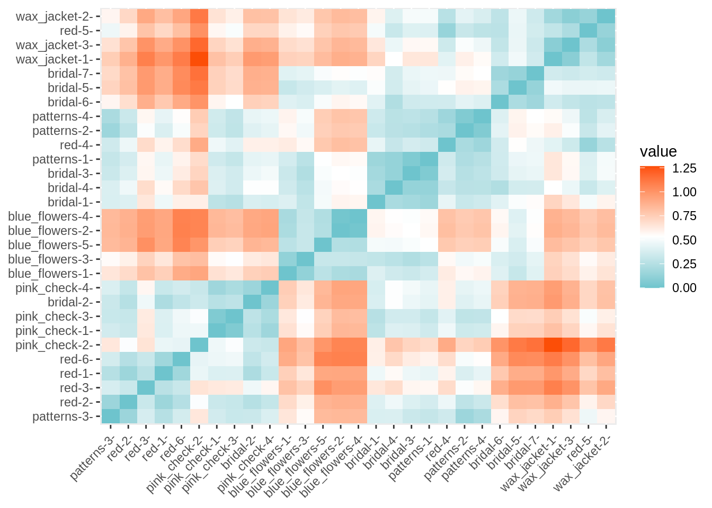
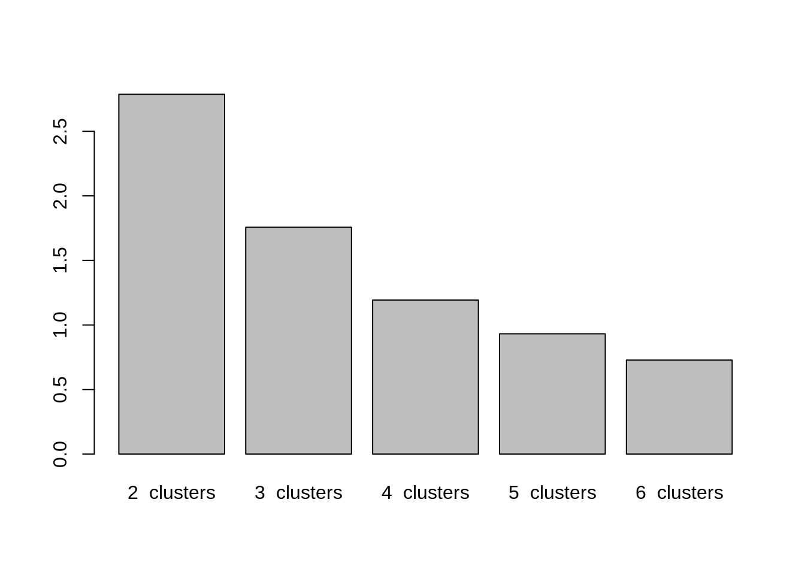
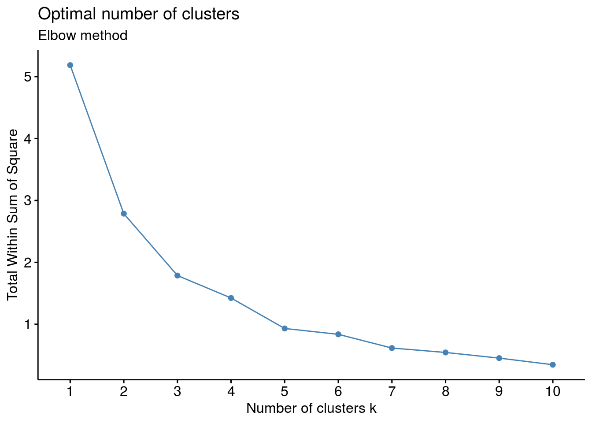
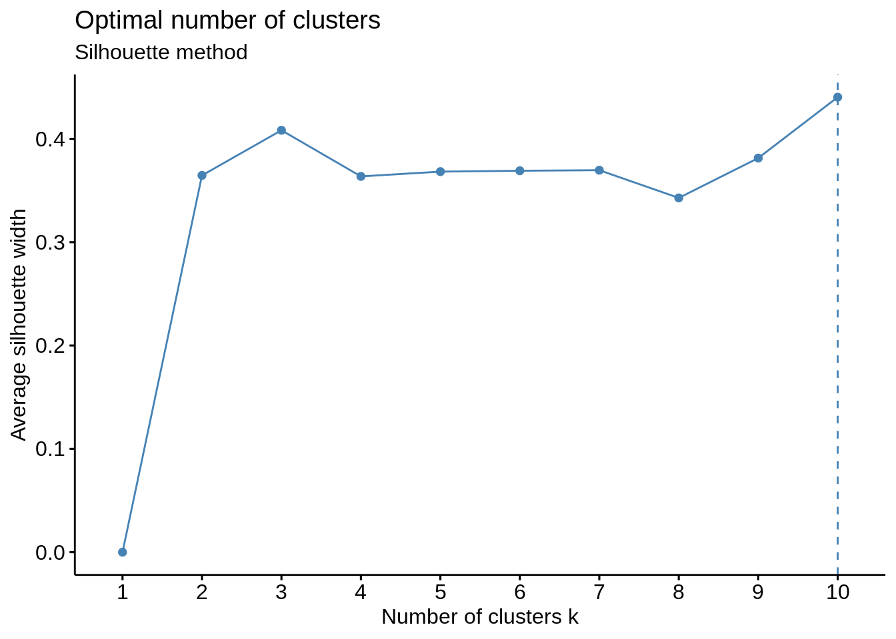
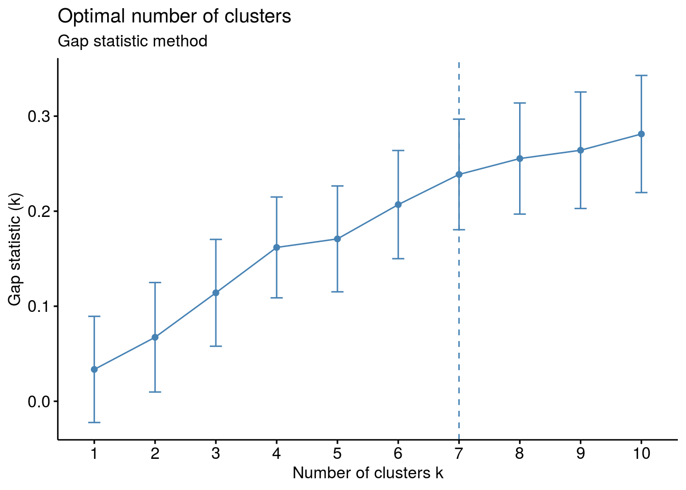

2 ClusterDucks
In Sydney, the ducks have their own fashion show....
Use the drop-down menu to explore the collection of duck outfits.

All images used here are available here. To read images into R you can use the readJPEG() function from the R package jpeg. Using readJPEG each image is read in as a \(m*n*3\) array, where each of the three \(m*n\) matricies are the red, green, and blue primary values (R, G, & B values) of each pixel respectivly.
2.1 RGB data
For ease, however, we're going to download the RGB data directly from GitHub.
data_url <- "https://github.com/cmjt/statbiscuits/raw/master/swots/data/duck_rgbs.RData"
load(url(data_url))
Figure 2.1: RGB arrays for the first image (element) of the ducks_rgbs object. The image is of a duck in the 'blue flowers' outfit.
Figure 2.2: RGB arrays for the second image (element) of the ducks_rgbs object. The image is of a duck in the 'blue flowers' outfit.
The duck_rgbs object is a named list of RGB arrays for each image. There are 29 different images of 6 different outfits.
length(duck_rgbs)## [1] 29names(duck_rgbs)## [1] "blue_flowers-1" "blue_flowers-2" "blue_flowers-3" "blue_flowers-4"
## [5] "blue_flowers-5" "bridal-1" "bridal-2" "bridal-3"
## [9] "bridal-4" "bridal-5" "bridal-6" "bridal-7"
## [13] "patterns-1" "patterns-2" "patterns-3" "patterns-4"
## [17] "pink_check-1" "pink_check-2" "pink_check-3" "pink_check-4"
## [21] "red-1" "red-2" "red-3" "red-4"
## [25] "red-5" "red-6" "wax_jacket-1" "wax_jacket-2"
## [29] "wax_jacket-3"Let's summarise each image by the average R, G, and B value respectively.
cluster_ducks <- data.frame(attire = stringr::str_match(names(duck_rgbs),"(.*?)-")[,2],
av_red = sapply(duck_rgbs, function(x) mean(c(x[,,1]))),
av_green = sapply(duck_rgbs, function(x) mean(c(x[,,2]))),
av_blue = sapply(duck_rgbs, function(x) mean(c(x[,,3]))))
head(cluster_ducks)## attire av_red av_green av_blue
## blue_flowers-1 blue_flowers 0.4529505 0.4790429 0.4610547
## blue_flowers-2 blue_flowers 0.4751319 0.5131624 0.4977116
## blue_flowers-3 blue_flowers 0.4560981 0.4881459 0.4919892
## blue_flowers-4 blue_flowers 0.4745254 0.5117347 0.4948642
## blue_flowers-5 blue_flowers 0.5955183 0.6413420 0.5757063
## bridal-1 bridal 0.5718594 0.5645125 0.4567448table(cluster_ducks$attire)##
## blue_flowers bridal patterns pink_check red wax_jacket
## 5 7 4 4 6 3library(plotly) ## for 3D interactive plotsplot_ly(x = cluster_ducks$av_red, y = cluster_ducks$av_green,
z = cluster_ducks$av_blue,
type = "scatter3d", mode = "markers",
color = cluster_ducks$attire)## Warning: `arrange_()` is deprecated as of dplyr 0.7.0.
## Please use `arrange()` instead.
## See vignette('programming') for more help
## This warning is displayed once every 8 hours.
## Call `lifecycle::last_warnings()` to see where this warning was generated.Figure 2.3: 3D scatterplot of the average RGB value per image.
Rather than the average R, G, & B let's calculate the proportion of each primary.
prop.max <- function(x){
## matrix of index of max RGB values of x
mat_max <- apply(x,c(1,2),which.max)
## table of collapsed values
tab <- table(c(mat_max))
## proportion of red
prop_red <- tab[1]/sum(tab)
prop_green <- tab[2]/sum(tab)
prop_blue <- tab[3]/sum(tab)
return(c(prop_red,prop_green,prop_blue))
}
## proportion of r, g, b in each image
prop <- do.call('rbind',lapply(duck_rgbs,prop.max))
cluster_ducks$prop_red <- prop[,1]
cluster_ducks$prop_green <- prop[,2]
cluster_ducks$prop_blue <- prop[,3]plot_ly(x = cluster_ducks$prop_red, y = cluster_ducks$prop_green,
z = cluster_ducks$prop_blue,
type = "scatter3d", mode = "markers",
color = cluster_ducks$attire)Figure 2.4: 3D scatterplot of the proportion of RGB value per image.
2.2 K means clustering
Can we cluster the images based on the calculated measures above?
## library for k-means clustering
library(factoextra)
## re format data. We deal only with the numerics info
df <- cluster_ducks[,2:7]
## specify rownames as image names
rownames(df) <- names(duck_rgbs)distance <- get_dist(df)
fviz_dist(distance, gradient = list(low = "#00AFBB", mid = "white", high = "#FC4E07"))
So we have an idea there are 6... but is there enough information in the noisy images?
Setting nstart = 25 means that R will try 25 different random starting assignments and then select the best results corresponding to the one with the lowest within cluster variation.
## from two clusters to 6 (can we separate out the images?)
set.seed(4321)
k2 <- kmeans(df, centers = 2, nstart = 25)
k3 <- kmeans(df, centers = 3, nstart = 25)
k4 <- kmeans(df, centers = 4, nstart = 25)
k5 <- kmeans(df, centers = 5, nstart = 25)
k6 <- kmeans(df, centers = 6, nstart = 25)The kmeans() function returns a list of components:
cluster, integers indicating the cluster to which each observation is allocatedcenters, a matrix of cluster centers/meanstotss, the total sum of squareswithinss, within-cluster sum of squares, one component per clustertot.withinss, total within-cluster sum of squaresbetweenss, between-cluster sum of squaressize, number of observations in each cluster
k2$tot.withinss## [1] 2.786543k3$tot.withinss## [1] 1.75652k4$tot.withinss## [1] 1.193151k5$tot.withinss## [1] 0.9316645k6$tot.withinss## [1] 0.7281481barplot(c(k2$tot.withinss,k3$tot.withinss,k4$tot.withinss,
k5$tot.withinss,k6$tot.withinss),
names = paste(2:6," clusters"))
p2 <- fviz_cluster(k2, data = df)
p3 <- fviz_cluster(k3, data = df)
p4 <- fviz_cluster(k4, data = df)
p5 <- fviz_cluster(k5, data = df)
p6 <- fviz_cluster(k6, data = df)
## for arranging plots
library(patchwork)
p2/ p3/ p4/ p5/ p6
2.2.1 How many clusters are best?
The fviz_nbclust() function in the R package factoextra can be used to compute the three different methods [elbow, silhouette and gap statistic] for any partitioning clustering methods [K-means, K-medoids (PAM), CLARA, HCUT].
# Elbow method
fviz_nbclust(df, kmeans, method = "wss") +
labs(subtitle = "Elbow method")
# Silhouette method
fviz_nbclust(df, kmeans, method = "silhouette")+
labs(subtitle = "Silhouette method")
# Gap statistic
# recommended value: nboot= 500 for your analysis.
set.seed(123)
fviz_nbclust(df, kmeans, nstart = 25, method = "gap_stat", nboot = 50)+
labs(subtitle = "Gap statistic method")## Clustering k = 1,2,..., K.max (= 10): .. done
## Bootstrapping, b = 1,2,..., B (= 50) [one "." per sample]:
## .................................................. 50